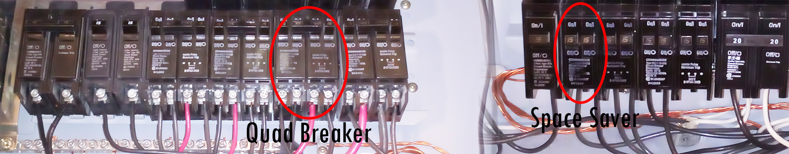
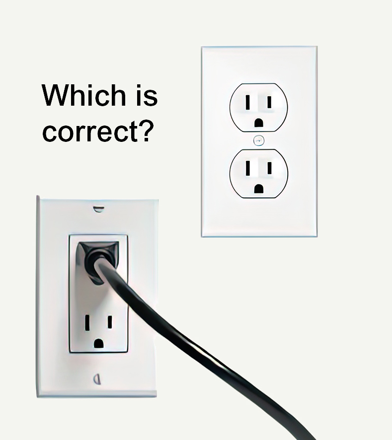

-
Electrical Maintenance Tips
The electrical panel and breakers (or fuses) are the heart of the home. Without electricity in the home, nothing will work. Here are some useful basic electrical tips a general homeowner should know.
Note: Electrical work done in a home should be completed by a licensed electrician.Electrical Panel: Get it labelled correctly
Your electrical panel should be labelled to indicate which breaker is feeding which device(s): A/C, furnace, stove, bathroom, refrigerator, hall, outdoor GFI, etc. The label can be a sticker on the panel or a card. Many times, these labels are wrong or incomplete.
Why? Know which breaker to shut off for renovations, repairs, or in an emergency. For safety, do not mistakenly turn off the wrong breaker.
How? Instead of tedious trial and error, use a circuit breaker finder like the one shown below. Attach the transmitter to an outlet, socket, or wire lead, and then scan the breakers using the receiver. Audio/lights indicate which breaker is feeding the source.
Resetting a tripped breaker
Why? A common occurrence in a home is a tripped breaker. What does that mean? A tripped breaker indicates that the circuit has an overload, short circuit condition, or a ground fault/arc fault (in the case of a GFI/AFI breaker). Too much current is being drawn, or an unintended path was created.
How? At your panel, look for the breaker that has tripped. The handle should only be about halfway. To reset the breaker, turn the breaker handle fully to the OFF position, then switch it back ON. Some breakers, such as Square D, will have a red indicator on the front of the breaker to indicate a tripped breaker. This red indicator should go off when properly reset. -
Do you have the correct brand of breakers in your panel?
If you have a breaker panel, chances are you have either a Square D, Federal Pioneer, Homeline, Cutler-Hammer (Eaton), GE, or Siemens manufactured panel in your home. These brands are the most common in Canada. The problem is that you may have Siemens, Cutler-Hammer (Eaton), or Homeline breakers installed in each other's panels.
Why? Because they all use a 1" wide breaker design with a similar connection style. This is not allowed in Canada, as per each manufacturer. The breakers are not CSA-approved to be in a different manufactured panel.
How to confirm? Simply look for the manufacturer's name on the breaker front. DO NOT REMOVE the panel cover! If there are multiple brands in one panel, have a professional, licensed electrician remove and replace the wrong breaker(s) in the panel. -
What are arc fault breakers?
An arc fault breaker (AFI) is a “fire prevention” breaker, while a ground fault breaker (GFI) is a “people protection” breaker.
Why? An arc fault breaker detects unintended arcs and quickly trips the breaker before an arc can cause a fire. It can be caused by a punctured cable, damaged extension cords, a screw piercing through a wall, or a defective device.
An updated version (In Canada, 2015) is called a Combination Arc Fault Breaker (CAFI). It is not an arc fault and ground fault in one breaker (that is called a dual-function breaker). This arc fault breaker will trip both series and parallel arcs, while the first generation did not.
How? Initially, the arc fault breaker was introduced in the bedrooms only, but eventually, that has expanded to most of the house, with some exceptions being areas where GFI protection is required. They are required in new construction or new circuits in the home. If you are upgrading your panel from fuses to breakers, and there is no change in the circuits, your breakers do not have to be upgraded to arc fault breakers. -
Why does the fuse keep blowing when turning on my window air conditioner?
Why? Your fuse can trip on devices with motors or, in the case of an air conditioner, a compressor. These devices require a high startup current, as much as 6 times normal. A fuse does not know better, so it thinks it has an overcurrent condition and “blows”.
DO NOT use a higher amperage fuse! If your appliance requires a 15A fuse, do not replace it with a 20A fuse to stop it from blowing. That is dangerous.
How? A standard fuse is a Type “P”. To fix this problem, just replace the standard fuse with a “Time Delay” fuse, otherwise known as a Type “D” fuse, also available at most hardware stores. This prevents nuisance tripping by ignoring the initial higher inrush current.
-
My breaker panel is full, but I want to add more circuits.
First, do not piggyback (double tap) your new circuits to existing breakers in the panel. Yes, certain manufacturers (Square D) do exist that allow two wires for some breakers. But, it is generally acknowledged that double-tapping is a condition that a home inspector will report as an issue.
Why? It may cause nuisance tripping with two circuits feeding one breaker and if the wrong-sized wire is used, it could result in loose connections.
What is a better way? The proper procedure is to replace an existing breaker in the panel with a “space saver,” otherwise known as a “tandem” breaker. Space saver breakers have two smaller handles in place of a single handle, which are for two separate circuits but take up just one space in the panel. This is much safer than double-tapping. Many brands carry this type of space saver or "Quad" breaker. A Quad breaker is a double pole breaker (various amperage) plus two single pole breakers (usually 15A or 20A) on each side, but takes the same space as a standard 2-pole breaker.
Note: installing breakers should be done by a professional licensed electrician.
-
I have old two-prong receptacles, but need ground for my devices
The proper procedure is always to add a proper ground wire to the receptacle. Unfortunately, this is often difficult to accomplish in older homes.
Why? With no ground, a device is more dangerous because there is no place for unintended electricity to go except through you.
How? If it is not possible to add a ground wire to an existing receptacle, then it is acceptable to replace the two-prong receptacle with a GFI receptacle. This method is not as good as proper grounding back to the panel, but since it is a GFI receptacle, it does provide ground fault protection with a 5mA difference.
-
How come my receptacles are all upside down in my house?
My receptacles are installed wrong because the ground is on top. It's upside down!
Do I need to get an electrician to reverse them? The simple answer is no. There is no right or wrong way in Canada when it comes to installing the receptacle, with the ground on top or bottom. It certainly is more common to see the ground on the bottom in most homes, but the ground on top is not wrong.Some argue that it is safer to install the receptacle ground up. If a plug is loose, it will bend down and expose the top portion. Exposing the ground is safer because there is no current flow, but with the hot and neutral connection on top, it can expose a live connection, and if something thin (and conductive) drops from above, it could electrify the object.
-

Receptacles
-
Do you need Whole House Surge Protection?
With all the electronic devices in the home, protecting them from unwanted surges is more important than ever. Surge bars are common today in the home, but only protect some devices. What if you could protect the entire house with one device? Whole-house surge devices protect the entire house from electrical surges and are installed outside the panel, similar to any circuit, connected to a double pole breaker (amperage can vary according to manufacturer). Prices vary from $100 to +$350. There are also whole-house surge devices that install even more easily, like a breaker, inside the panel. Just find a space in the panel and plug it in!
For more information, watch our short introductory video about whole-house surge.
-
Backup Power in the Home from Standby Generators
Here in Canada, there is always the possibility of a power outage in the winter. Depending on where you live (more rural areas), a power outage in the winter can last not just hours but days, or even weeks, depending on the location. Many people today are working from home, so having power is critical just to earn a living. The loss of power can also result in your food going bad, a non-working sump pump, no lights, and the inability to cool your house in the summer and heat your home in the cold winters.
A generator panel is used with your standby generator to provide safe backup power by switching the power source from your utility company to your generator. With a generator panel, you determine what critical loads you want to back up in case of an emergency. Those loads will be relocated from the main panel to the new generator panel.
The purpose of this setup is to have the standby generator safely outside, so when the power goes out, you plug the generator into the house via a generator inlet box on the side of the house
On the generator panel, there is an interlock mechanism so you can manually switch from utility power to generator power. The interlock prevents both sources of power from entering the generator panel at the same time. -
Additional Quick Electrical Tips
-
A circuit breaker is like a switch that opens and closes a circuit, but it will automatically open the circuit when there is an overcurrent or short circuit.
Overcurrent: occurs when a much higher than intended electrical current flow in a conductor (electrical wire) leads to overheating of the wire. It may result from plugging too many appliances into a single outlet or using an undersized wire for a circuit breaker size.
Short circuit: an electrical circuit where the current takes an unintended path, usually as a result of damaged insulation in a wire. It can lead to damaged equipment, fire, or personal injury.Safe Branch Circuit Capacity: 80 % of branch breaker rating: A 15A circuit has a total capacity of 1,800W (120V x 15A), and a safe capacity of 1,440W (or 12A). Watts = Voltage x Amperage. If you have a circuit breaker that is constantly tripping, one possible solution would be to decrease the wattage in that circuit by removing devices from the circuit.
Federal Pioneer (Stab-lok) 2-Pole breakers must be installed ‘across’ (not in between) the black dividers on the bus bar in the panel for proper 240V operation. If the 2 pole breaker is in between the black dividers, it is only attached to one bus bar, providing only 120V instead of two bus bars for proper 240V.

In Canada, technically, no. But if you have sinks or water hoses in the garage, it is a good idea to protect your receptacles with GFI protection.
The issue with aluminum wires compared to copper wires is their tendency to oxidize and become loose in connections, especially with terminals. Combined with a softer metal than copper, solid aluminum wires are not used anymore because they can create arcing and cause a fire.
Solid aluminum wire is no longer used, but service conductors #8 or larger are stranded and are still used in panels today. One reason is cost, as larger copper wires are very expensive. Stranded aluminum wire is still used for service entrance conductors as long as an antioxidant is used on it.
Aluminum wires were first used in the 1960s and finally stopped being used in the late 1970s. The first type of aluminum wire is marked as AA-1350. These aluminum wires had oxidation issues and suffered from expansion and contraction problems. When a wire expands and contracts, it can lead to the wire becoming loose and may cause arcing. Eventually, an improved version was introduced called the AA-8000. This aluminum wire had properties close to copper wires, with more flexibility and less “creep”, so it did not have as many issues as the AA-1350.
If you have a house with halogen lights, they waste a lot of energy creating heat instead of creating light. There are now flat style LED recessed lighting that requires little headroom, create little heat and are thus safer.
{kind=link}
{kind=link}